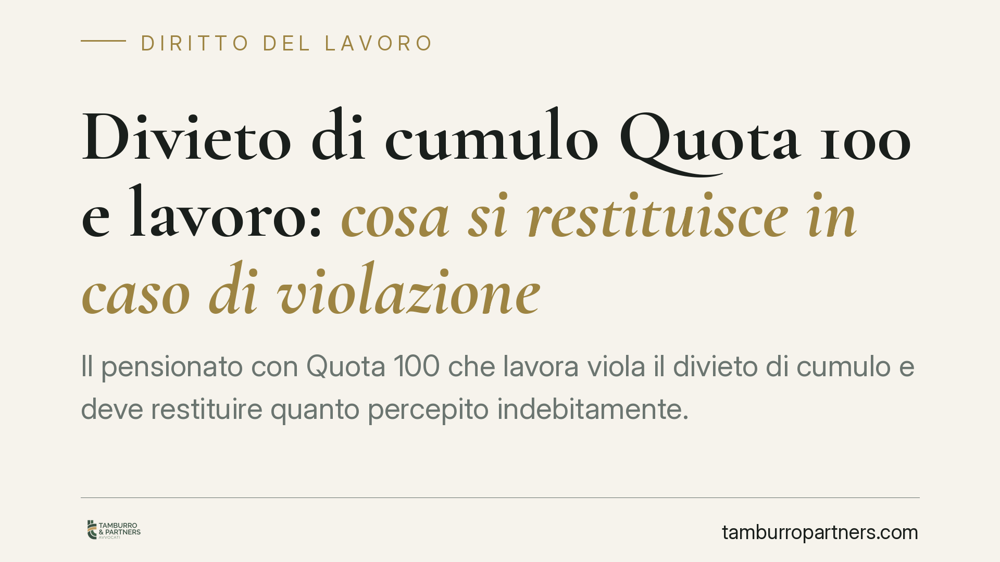

Divieto di cumulo Quota 100 e lavoro: cosa si restituisce in caso di violazione
Il pensionato con Quota 100 che lavora viola il divieto di cumulo e deve restituire quanto percepito indebitamente. Un orientamento giurisprudenziale punta a limitare la restituzione al reddito incompatibile, in nome della proporzionalità, anziché all'intera annualità di pensione. Il tema resta aperto: la regola non legittima il cumulo, ma incide sulla misura della sanzione. Facciamo chiarezza.

Il contesto
Chi accede al pensionamento anticipato con Quota 100 sa, o dovrebbe sapere, che la misura è incompatibile con lo svolgimento di attività lavorativa. È uno dei pilastri del regime: la pensione anticipata serve a liberare il posto di lavoro, non a sommarsi a un nuovo reddito.
La questione che ricorre nel contenzioso riguarda la conseguenza della violazione. Se il pensionato lavora durante il periodo di incompatibilità, cosa deve restituire all'INPS? L'intera pensione percepita in quell'anno, oppure soltanto una somma commisurata al reddito da lavoro prodotto?
Inquadramento normativo
La norma di riferimento è l'art. 14, comma 3, del DL 28 gennaio 2019, n. 4 (convertito con modificazioni dalla L. 26/2019). La disposizione stabilisce che la pensione Quota 100 non è cumulabile con i redditi da lavoro, dipendente o autonomo, percepiti dal momento della decorrenza del trattamento fino al raggiungimento dell'età per la pensione di vecchiaia.
La legge prevede un'unica eccezione: sono ammessi i redditi da lavoro autonomo occasionale, nel limite di 5.000 euro lordi annui. Oltre quella soglia, e per ogni altra tipologia di lavoro, scatta l'incompatibilità.
Il testo normativo, però, non chiarisce in modo espresso l'entità di quanto debba essere recuperato dall'INPS in caso di violazione. È su questo vuoto che si innesta il dibattito giurisprudenziale.
Il nodo interpretativo
Due letture si contrappongono.
La prima, più rigorosa, considera la violazione come causa di decadenza dall'intero trattamento per l'annualità in cui si è verificato il cumulo: il pensionato restituisce tutta la pensione incassata in quel periodo.
La seconda, ispirata al principio di proporzionalità, limita la restituzione a una somma pari al reddito da lavoro effettivamente percepito. In questa prospettiva, la sanzione non deve risultare sproporzionata rispetto alla condotta: chi ha lavorato marginalmente non può essere trattato come chi ha prodotto un reddito elevato.
Questa seconda lettura trova appiglio nell'orientamento costituzionale in materia di proporzionalità delle decadenze previdenziali, che da tempo richiede un equilibrio tra la gravità della violazione e la conseguenza patrimoniale imposta. Si tratta, allo stato, di un indirizzo in evoluzione: prima di considerarlo acquisito occorre verificare il consolidarsi delle pronunce di legittimità sul punto specifico.
Un chiarimento necessario
Va detto con nettezza: un'eventuale limitazione della restituzione non legittima il cumulo. Il divieto resta pieno. La questione riguarda esclusivamente la *misura* della somma da restituire, non la liceità del comportamento. Chi lavora durante il periodo di incompatibilità viola comunque la legge e si espone al recupero delle somme indebite.
Le altre misure: attenzione a non generalizzare
Si tende ad estendere il ragionamento anche a Quota 102 e Quota 103, che condividono con Quota 100 la logica dell'incompatibilità con i redditi da lavoro. L'estensione è plausibile per identità di ratio, ma va verificata caso per caso: ogni misura ha una propria disciplina di dettaglio.
Discorso diverso per l'Ape sociale, che non prevede un divieto assoluto di cumulo analogo a quello di Quota 100, bensì limiti reddituali di compatibilità propri. Accostare i due regimi senza distinzione è impreciso e rischia di indurre in errore: chi percepisce l'Ape sociale deve verificare le soglie specifiche della propria misura, non applicare per analogia le regole della pensione anticipata.
Implicazioni pratiche
Per il pensionato il rischio concreto è ricevere dall'INPS una richiesta di restituzione. L'entità della pretesa dipende dall'orientamento applicato e dall'importo del reddito prodotto. Chi si trova in questa situazione ha interesse a far valere, ove ne ricorrano i presupposti, la lettura proporzionale, ma deve mettere in conto l'incertezza del quadro.
Cosa fare in concreto
- Verifica la tua posizione: se percepisci Quota 100, 102 o 103, accerta che non vi siano redditi da lavoro incompatibili, salvo i 5.000 euro annui di lavoro autonomo occasionale.
- Conserva la documentazione reddituale relativa al periodo di pensionamento anticipato: è decisiva per quantificare un eventuale recupero.
- Non ignorare le comunicazioni INPS: a fronte di una richiesta di restituzione, valuta i termini per la contestazione prima che diventino definitivi.
- Distingui la tua misura: se percepisci l'Ape sociale, non applicare le regole di Quota 100; verifica i limiti reddituali specifici.
- Chiedi una valutazione tecnica sull'importo contestato: la differenza tra restituzione integrale e restituzione proporzionale può essere rilevante.
Avvertenza
Una singola pronuncia di legittimità non costituisce diritto consolidato. Prima di fondare una strategia difensiva su un determinato orientamento, consigliamo di verificarne la tenuta nel tempo e la coerenza con gli indirizzi successivi.
---
*Contributo informativo a cura di Tamburro & Partners — Avv. Giuseppe Tamburro. Non costituisce parere legale.*
Ogni storia di lavoro ha i suoi tempi.
Se gestisci HR e vuoi un confronto su contenzioso, ispezioni o licenziamenti, scrivi allo studio. Ti rispondiamo entro un giorno lavorativo.